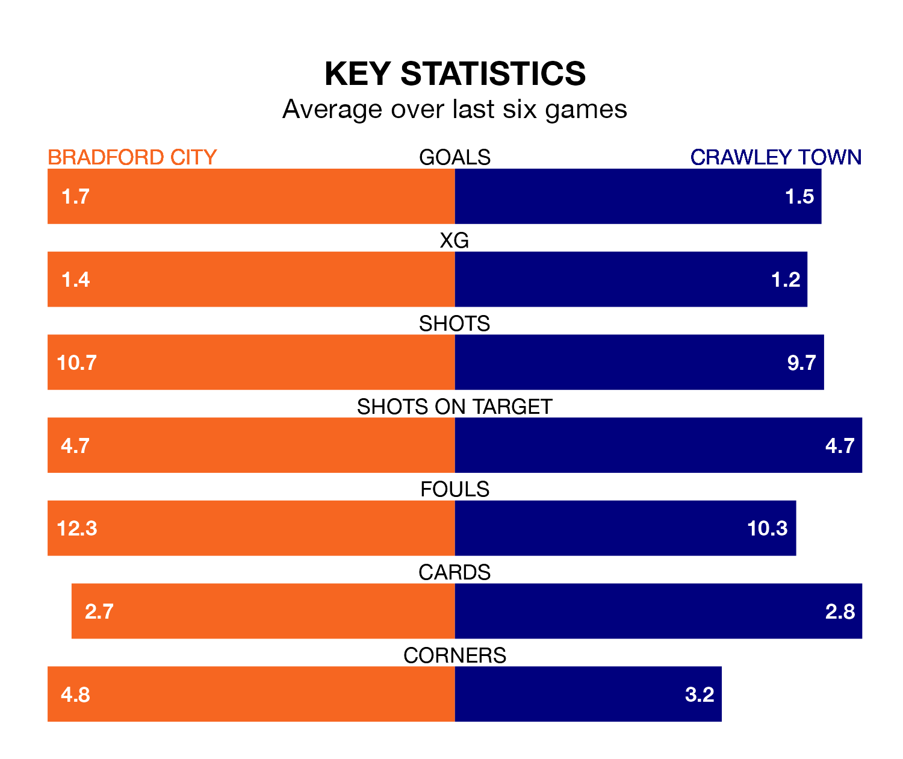

Crawley Town travel to Bradford City on Saturday in EFL League Two.
The visitors come into the game on the back of a win in their last match, having beaten Swindon Town 3-1 at home, with two goals from Danilo Orsi-Dadamo and one from Jack Roles.
The Bantams, meanwhile, lost their last match, 1-0 against Crewe Alexandra.
With 31 goals in 25 games so far this season, Bradford are scoring at below the league average rate with 1.2 goals per game. But they are conceding fewer than average too, letting in 31 goals at a rate of 1.2 per game.
Crawley, meanwhile, are above average scorers, with 1.6 goals per game, compared to a league average of 1.5. They have conceded 1.7 goals per game.
With Harry Lewis between the sticks, City can rely on one of the league's safest pair of hands. He has kept eight clean sheets in his 25 appearances this season in EFL League Two.
In Town's net, Corey Addai has three clean sheets in 18 games. He has conceded a goal every 60 minutes, 20% more often than the 75 minutes between goals for Lewis.
In the last five years, Bradford and Crawley have played each other on nine occasions. Bradford won one of them, Crawley five, and they drew three times.
On average, the Bantams scored 0.8 goals and the Red Devils 1.3 in those matches.
Their last meeting was on August 5, when Crawley won 1-0 at home.
The Bantams are in reasonable form in EFL League Two, with three wins and two draws from their last six games.
With three wins and three losses over that period, the Red Devils' form is slightly worse – they have taken nine points from 18, compared to the home team's 11.
Bradford are 13th in the table after 25 games, of which they have won nine and drawn seven, earning 34 points.
The visitors are one place ahead of Bradford in 12th, with 11 wins and three draws putting them on 36 points.
Updated: 12:57, 02/01/24